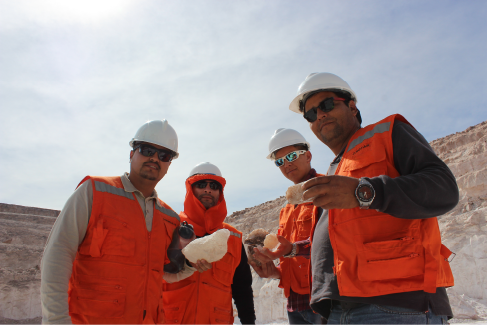

Training
High-Impact Training for Your Organization's Success
At Anupro360, we are dedicated to elevating the potential of your team and organization through training programs designed with the highest quality standards. Our experience and personalized approach allow us to offer effective and relevant learning solutions for a wide range of sectors.
Our Training Services Are Aimed At:
- Companies of All Sizes: From startups and SMEs to large corporations, we adapt our programs to meet the specific needs of each organization.
- Mining Companies: We have extensive experience in training mining teams and operational personnel, ensuring safety and efficiency in operations.
- Local Businesses: We drive the growth of local businesses and entrepreneurs, providing them with tools and knowledge to compete in today's market.
- Neighborhood Councils and Municipalities: We strengthen community development through training programs that promote citizen participation and local leadership.
- Contractor Companies: We ensure that work teams are highly trained to meet the quality and safety standards of their clients.
- Specialized Courses in Mining Equipment: We offer technical and operational training programs for the safe and efficient handling of mining equipment.
What Sets Us Apart?
- Expert Instructors: Our programs are taught by professionals with extensive experience in their respective areas.
- Personalized Programs: We adapt the content and methodology of our courses to the specific needs of each client.
- Practical Approach: We prioritize practical learning and the application of knowledge in the work environment.
- Cutting-Edge Technology: We use innovative learning tools and platforms to maximize the impact of training.
- Commitment to Excellence: We strive to exceed our clients' expectations and ensure their satisfaction.
- Recognized Certifications: We grant certifications that guarantee the acquisition of skills and knowledge, increasing the professional value of participants.
- Unique Added Value:
- Unlike the competition, we offer personalized post-training follow-up to ensure the effective application of knowledge.
- Our programs include innovation and industry trend modules, keeping participants at the forefront.
- We have strategic alliances with leading companies, facilitating networking and professional development opportunities.
Boost Your Organization's Growth with Our High-Level Training Programs.
Contact us today and discover how we can help you achieve your goals!